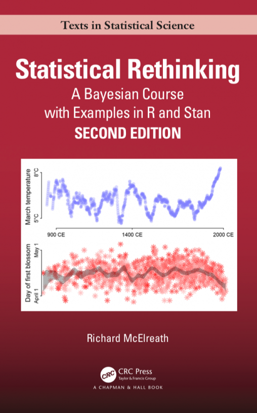

📊 Syllabus
Instructor
- Dr. Ryan Wesslen
- Center City 714
- rwesslen@uncc.edu
- @ryanwesslen
- Schedule an appointment
Course details
- Monday
- Jan 10, 2022 - May 12, 2022
- 12:00pm-2:45pm
- Center City 1101
- Slack
Contacting me
E-mail and Slack are the best ways to get in contact with me.
What you will learn
- Bayesian inference through probabilistic programming (R/Stan, Python/PyMC3, Julia/Turing.jl)
- Computational approaches for statistical modeling (e.g., quadratic approximation, sampling, MCMC, Hamiltonian Monte Carlo)
- Techniques from machine learning to reduce overfitting in statistical models (e.g., cross-validation, regularization, shrinkage, pooling)
- Causal inference to develop robust statistical models and identify causal relationships
Course overview
This course builds your knowledge of and confidence in making inferences from data. Reflecting the need for scripting in today’s model-based statistics, students will perform step-by-step calculations that are usually automated. This unique computational approach ensures that sufficient understanding to make reasonable choices and interpretations in your own modeling work.
We’ll cover causal inference and generalized linear multilevel models from a simple Bayesian perspective that builds on information theory and maximum entropy. The core material ranges from the basics of regression to advanced multilevel models. If time, we’ll discuss measurement error, missing data, and Gaussian process models for spatial and phylogenetic confounding.
The course also includes directed acyclic graph (DAG) approach to causal inference. Additional topics may include the design of prior distributions, splines, ordered categorical predictors, social relations models, cross-validation, importance sampling, instrumental variables, and Hamiltonian Monte Carlo. Our goal is to go beyond generalized linear modeling, showing how domain-specific scientific models can be built into statistical analyses.
Application of the models will focus on research in cognitive science, human-computer interaction, computational social science, and information visualization.
Course philosophy
Classical statistics classes spend substantial time covering probability theory, null hypothesis testing, and other statistical tests first developed hundreds of years ago. Some classes don’t use software or actual real data and instead live in the world of mathematical proofs. They can be math-heavy and full of often unintuitive concepts and equations.
In this class,1 we will take the opposite approach. We begin with data and learn how to tidy, wrangle, manipulate, and visualize it with code. Later in the semester we’ll turn to the powerful toolbox of causal inference approaches, but continue to keep the focus on data as we do so.
In other words, there’s way less of this:
\[ f(x) = \dfrac{1}{\sqrt{2\pi}} e^{-\frac12 x^2} \]
And way more of this:
summary_monthly_temp <- weather %>%
group_by(month) %>%
summarize(mean = mean(temp),
std_dev = sd(temp))
Over the last decade there has been a revolution in statistical and scientific computing. Open source languages like R and Python have overtaken older (and expensive!) corporate software packages like SAS and SPSS, and there are now thousands of books and blog posts and other online resources with excellent tutorials about how to analyze pretty much any kind of data.
This class will expose you to R—one of the most popular, sought-after, and in-demand statistical programming languages. Armed with the foundation of R skills you’ll learn in this class, you’ll know enough to be able to find how to analyze any sort of data-based question in the future.
Important pep talk!
I promise you can succeed in this class.
Learning R can be difficult at first—it’s like learning a new language, just like Spanish, French, or Chinese. Hadley Wickham—the chief data scientist at RStudio and the author of some amazing R packages you’ll be using like ggplot2—made this wise observation:
It’s easy when you start out programming to get really frustrated and think, “Oh it’s me, I’m really stupid,” or, “I’m not made out to program.” But, that is absolutely not the case. Everyone gets frustrated. I still get frustrated occasionally when writing R code. It’s just a natural part of programming. So, it happens to everyone and gets less and less over time. Don’t blame yourself. Just take a break, do something fun, and then come back and try again later. Even experienced programmers and evaluators find themselves bashing their heads against seemingly intractable errors. If you’re finding yourself taking way too long hitting your head against a wall and not understanding, take a break, talk to classmates, e-mail me, etc.


Course materials
Books
There is one textbook for this course.

Articles, book chapters, and other materials
There will also occasionally be additional articles and videos to read and watch. When this happens, links to these other resources will be included on the reading page for that week.
R and RStudio
You will do all of your analysis with the open source (and free!) programming language R. You will use RStudio as the main program to access R. Think of R as an engine and RStudio as a car dashboard—R handles all the calculations and the actual statistics, while RStudio provides a nice interface for running R code.
R is free, but it can sometimes be a pain to install and configure. To make life easier, you can (and should!) use the free RStudio.cloud service, which lets you run a full instance of RStudio in your web browser. This means you won’t have to install anything on your computer to get started with R! We will have a shared class workspace in RStudio.cloud that will let you quickly copy templates for labs and problem sets.
RStudio.cloud is convenient, but it can be slow and it is not designed to be able to handle larger datasets or more complicated analysis. Over the course of the semester, you’ll probably want to get around to installing R, RStudio, and other R packages on your computer and wean yourself off of RStudio.cloud. This isn’t necessary, but it’s helpful.
You can find instructions for installing R, RStudio, and all the tidyverse packages here.
Online help
Data science and statistical programming can be difficult. Computers are stupid and little errors in your code can cause hours of headache (even if you’ve been doing this stuff for years!).
Fortunately there are tons of online resources to help you with this. Two of the most important are StackOverflow (a Q&A site with hundreds of thousands of answers to all sorts of programming questions) and RStudio Community (a forum specifically designed for people using RStudio and the tidyverse (i.e. you)).
If you use Twitter, post R-related questions and content with #rstats. The community there is exceptionally generous and helpful.
Searching for help with R on Google can sometimes be tricky because the program name is, um, a single letter. Google is generally smart enough to figure out what you mean when you search for “r scatterplot”, but if it does struggle, try searching for “rstats” instead (e.g. “rstats scatterplot”).
Additionally, we have a class chatroom at Slack where anyone in the class can ask questions and anyone can answer. I will monitor Slack regularly and will respond quickly. (It’s one of the rare Slack workspaces where I actually have notifications enabled!) Ask questions about the readings, assignments, and project. You’ll likely have similar questions as your peers, and you’ll likely be able to answer other peoples’ questions too.
Course structure
We meet weekly from 12:00-2:45 PM on Mondays in Center City 11-1. However, despite policies and rhetoric to the contrary, we’re still in the middle of a severe global pandemic, and the delta variant of COVID-19 is raging.
Accordingly, this semester we’re going to have a flipped classroom, which will let us maximize flexibility during this pandemic.
We will not have lectures during our regularly scheduled class time. Instead, you will do the readings and watch recorded lecture videos prior to each in-person class session. You can do the readings and watch the videos on your own schedule at whatever time works best for you.
We will do several things during our Monday in-person classes:
Extensive Q&A: As you do the readings and watch the videos prior to class, you will inevitably have questions. In your weekly check-in, you can submit (at least) 3 of those questions to me prior to class. We’ll spend a good chunk of each class answering, clarifying, debating, and discussing your questions. We’ll also review the lecture quiz due at the beginning of the class to ensure students are familar with the key concepts of the material
Activities: In some weeks, we’ll do some in-class activities to help solidify concepts about Bayesian statistics, causal inference, and programming. These will not be graded but may aid in upcoming problem set.
Problem sets: We’ll spend a substantial time during each class learning and working with R together on the problem sets. You’ll need to bring a computer.
Pandemic stuff
Masks
Per UNC Charlotte’s indoor mask policy:
Until further notice, face coverings are required in all indoor spaces at UNC Charlotte and are strongly encouraged outdoors when physical distance cannot be maintained. Face coverings must fully cover the nose and mouth.
This requirement is for all individuals regardless of vaccination status. It applies to all spaces, including Atkins Library, research spaces and studios, dining halls, recreational facilities, common spaces and residence halls. There will be only rare exceptions to this requirement, such as when students are in their personal residence hall rooms or when employees are in their personal offices.
Failure to comply with this requirement may result in disciplinary action under the Code of Student Responsibility or employee personnel action.
Vaccines
UNCC does not require this and I can’t legally require this but I am allowed to urge it so here’s me urging it:
Please get the COVID-19 vaccination (sign up for one here!). It is free. It saves lives. (I am fully vaccinated plus booster.)
Assignments and grades
You can find descriptions for all the assignments on the assignments page.
| Assignment | Points | Percent |
|---|---|---|
| Lecture quizzes | 20 | 20% |
| Problem sets | 20 | 20% |
| Participation | 10 | 10% |
| Exam | 20 | 20% |
| Final project | 30 | 30% |
| Total | 100 | — |
| Grade | Range |
|---|---|
| A (Comendable) | 90–100% |
| B (Satisfactory) | 80–89.99% |
| C (Marginal) | 70–79.99% |
| U (Unsatisfactory) | < 70% |
FAQs
Programming: Experience with R (e.g., installing packages, loading data, RStudio). Students without should immediately consider DataCamp courses and hands-on practice problems. Probability: Fundamental probability theory is highly recommended. This includes exposure to common distributions like Normal (Gaussian), Binomial, and Beta distributions. We’ll also assume core understanding of statistical models like linear regression. Lectures and coursework will use R. Students must complete assignments in R and the mid-term may cover some R code examples. Final projects can be done in Python (e.g., pyMC3) or Julia (turing.jl); however, it is the student’s responsibility to be fluent in setting up related environments/packages (e.g., Jupyter, virtual environments, etc.) if they want to use Python or Julia.What are the course prerequisites?
What programming languages will be used?
This philosophy as well as many other inspirational resources were originally created by Andrew Heiss, for example: his PMAP 8521 course website. Therefore, he deserves all praises for these ideas (he’s an amazing teacher). I’m grateful to be able to use such materials.↩︎